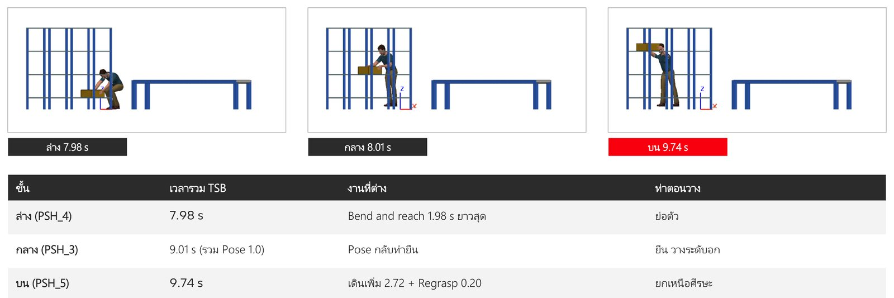
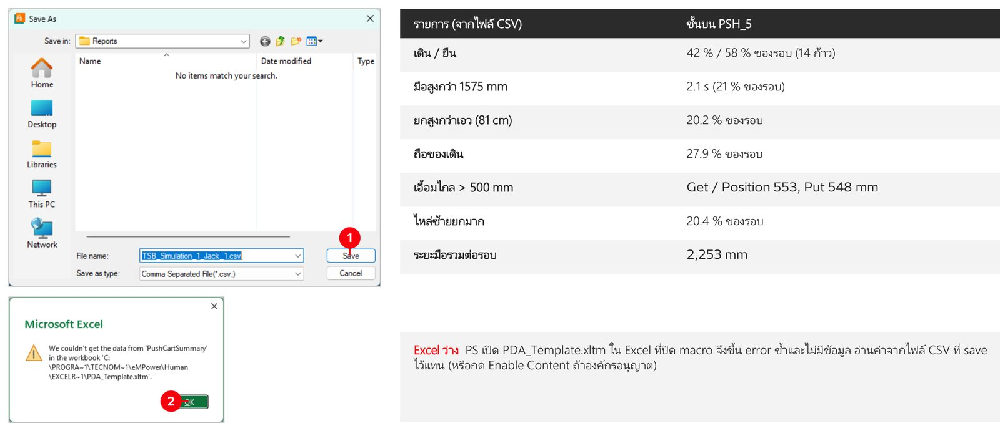
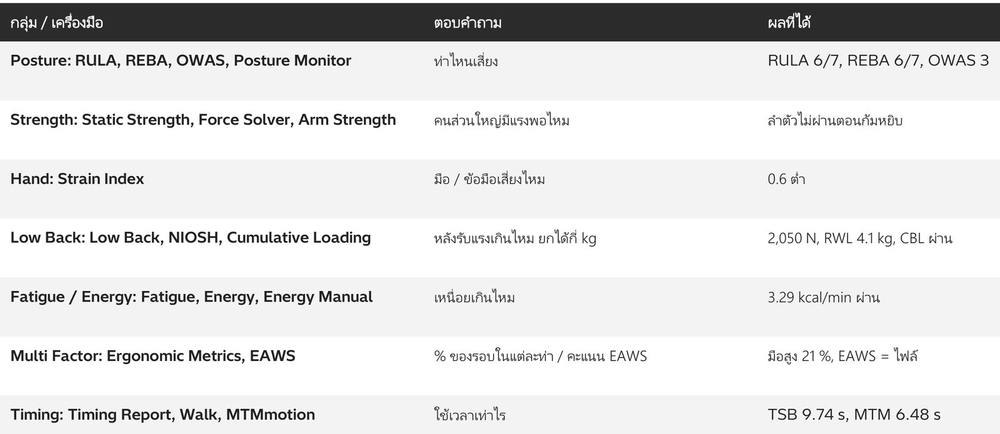

09. Human Basic
วัตถุประสงค์การเรียนรู้
- ตั้ง System Root, Convert and Insert CAD (JT) แล้วสร้างคนด้วย Create Human (Jack / Jill, Database, Quick Create)
- ตั้งท่าด้วย Human Posturing (Posture Library, Adjust Joint) และดู Work Zones / Vision Window
- สร้างงานด้วย Task Simulation Builder (TSB): Set Active, Go / Get / Put (เดินหยิบวาง 6.77 วินาที)
- ใช้ Position / Pose / Regrasp แล้วเทียบการวาง 3 ระดับชั้น (ล่าง 7.98 / กลาง 9.01 / บน 9.74 วินาที)
- วิเคราะห์ Ergonomics ด้วย RULA และ Analysis Tools ครบ 19 ตัว (RULA แขนซ้ายจากชั้นล่างไปชั้นบน 4 → 7)
จำลองคนทำงานด้วย Process Simulate Human ทีละขั้น รวม 35 ขั้น — สร้างคน (Jack / Jill) ตั้งท่า สร้างงานเดินหยิบวางด้วย TSB เทียบการวาง 3 ระดับความสูง แล้ววิเคราะห์ท่าทางด้วย RULA และ Analysis Tools
ภาพรวม: จากการสร้างคนถึงการวิเคราะห์ Ergonomics
| ลำดับ | หัวข้อ | ทำอะไร |
|---|---|---|
| 01 | Insert CAD | JT ใน _JT_Store เป็น .cojt |
| 02 | Create Human | Jack / Jill, ANSUR, percentile |
| 03 | Human Posturing | Posture Library, Adjust Joint |
| 04 | Work Zones / Vision | ระยะเอื้อมและมุมมองของคน |
| 05 | TSB | Task Simulation Builder, Set Active |
| 06 | Go / Get / Put | เดินหยิบวาง 6.77 วินาที |
| 07 | Position / Regrasp | ยกกล่องตั้งท่า เปลี่ยนมือจับ |
| 08 | เทียบ 3 ระดับชั้น | ล่าง 7.98 / กลาง 9.01 / บน 9.74 วินาที |
| 09 | Ergonomics | RULA + Analysis Tools ครบ 19 ตัว |
สิ่งที่ต้องมี: Process Simulate 2502 · โฟลเดอร์
09_HUMAN_BASIC · Process Simulate 2512 (บทนี้ใช้เวอร์ชันนี้) · Library\ (Box, Conveyor, Rack, Jack) · PSH_1 ถึง PSH_5 .psz
Workflow: 7 ช่วง
| ช่วง | งาน | ทำอะไร | ไฟล์ |
|---|---|---|---|
| 01 | บท 1: เปิดไฟล์ + CAD | System Root, Open, Convert and Insert CAD | PSH_1 |
| 02 | บท 2: สร้างคน | Create Human, Database, Quick Create | PSH_1 |
| 03 | บท 3: ท่าทาง | Posturing, Work Zones, Vision | PSH_2 |
| 04 | บท 4: TSB พื้นฐาน | Set Active, Go / Get / Put, Play | PSH_1 |
| 05 | บท 5: ชั้นกลาง | Position, Pose, มือแยก | PSH_3 |
| 06 | บท 6: ล่าง vs บน | Regrasp, เทียบเวลา 3 ระดับ | PSH_4 / 5 |
| 07 | บท 7: Ergonomics | RULA 3 ระดับ + Analysis Tools 19 ตัว | PSH_3 / 4 / 5 |
จำลองคนทำงานด้วย Process Simulate Human ทีละขั้น รวม 35 ขั้น — สร้างคน (Jack / Jill) ตั้งท่า สร้างงานเดินหยิบวางด้วย TSB เทียบการวาง 3 ระดับความสูง แล้ววิเคราะห์ท่าทางด้วย RULA และ Analysis Tools
ภาพรวม: จากการสร้างคนถึงการวิเคราะห์ Ergonomics
| ลำดับ | หัวข้อ | ทำอะไร |
|---|---|---|
| 01 | Insert CAD | JT ใน _JT_Store เป็น .cojt |
| 02 | Create Human | Jack / Jill, ANSUR, percentile |
| 03 | Human Posturing | Posture Library, Adjust Joint |
| 04 | Work Zones / Vision | ระยะเอื้อมและมุมมองของคน |
| 05 | TSB | Task Simulation Builder, Set Active |
| 06 | Go / Get / Put | เดินหยิบวาง 6.77 วินาที |
| 07 | Position / Regrasp | ยกกล่องตั้งท่า เปลี่ยนมือจับ |
| 08 | เทียบ 3 ระดับชั้น | ล่าง 7.98 / กลาง 9.01 / บน 9.74 วินาที |
| 09 | Ergonomics | RULA + Analysis Tools ครบ 19 ตัว |
สิ่งที่ต้องมี: Process Simulate · โฟลเดอร์
09_HUMAN_BASIC · Library\ (Box, Conveyor, Rack, Jack) · PSH_1 ถึง PSH_5 .psz
Workflow: 7 ช่วง
| ช่วง | งาน | ทำอะไร | ไฟล์ |
|---|---|---|---|
| 01 | บท 1: เปิดไฟล์ + CAD | System Root, Open, Convert and Insert CAD | PSH_1 |
| 02 | บท 2: สร้างคน | Create Human, Database, Quick Create | PSH_1 |
| 03 | บท 3: ท่าทาง | Posturing, Work Zones, Vision | PSH_2 |
| 04 | บท 4: TSB พื้นฐาน | Set Active, Go / Get / Put, Play | PSH_1 |
| 05 | บท 5: ชั้นกลาง | Position, Pose, มือแยก | PSH_3 |
| 06 | บท 6: ล่าง vs บน | Regrasp, เทียบเวลา 3 ระดับ | PSH_4 / 5 |
| 07 | บท 7: Ergonomics | RULA 3 ระดับ + Analysis Tools 19 ตัว | PSH_3 / 4 / 5 |
ขั้นที่ 1: ตั้ง System Root แล้วเปิด PSH_1_Basic_Human
- 1File
- 2Disconnected Study
- 3Open in Standard Mode
- 4PSH_1_Basic_Human
- 5Open
ขั้นที่ 2: ของใน study: Box, Conveyor, Rack และคน Jack
- 1Box (Part) ชิ้นงานที่ยก
- 2Conveyor ต้นทาง
- 3Rack ชั้นวาง 4 ชั้น
- 4Jack คน (Library\HUMAN_MODELS)
- 5TSB_Simulation_1 งานของคน
- 6Jack ยืนหน้า Rack
- 7Box อยู่ต้น Conveyor
ขั้นที่ 3: File > Import / Export > Convert and Insert CAD Files
- 1Import / Export
- 2Convert and Insert CAD Files
- 3Add... เลือกไฟล์ JT
- 4Import (หลังตั้งค่าครบ)
- 5Close
ขั้นที่ 4: Add Box.jt แล้วดู File Import Settings
- 1Look in = _JT_Store
- 2Box.jt
- 3Open
- 4Target Folder = Library
- 5Base class = Part
- 6Prototype = PmPartPrototype
- 7OK
ขั้นที่ 5: แท็บ Human > Create Human
- 1แท็บ Human > Create Human
- 2Gender = Male / Female
- 3Database = ANSUR
- 4Height 50% = 1750 mm
- 5Weight 50% = 79 kg
- 6Create (ตอนทำภาพกด Close)
ขั้นที่ 6: Database และ Quick Create
- 1Database เปิดรายการ
- 2มีหลายประเทศ เช่น ASIAN_INDIAN, CHINESE, JAPANESE, KOREAN
- 3ลูกศรใต้ Create Human
- 4Create Default Female
- 5Create Default Male เลือกให้ตรงกับคนงานจริง งานในไทยใช้ฐานข้อมูลเอเชียได้ ถ้าไม่มีให้ใช้ ANSUR แล้วปรับ Height / Weight เอง
ขั้นที่ 7: เปิด PSH_2: มี Jack และ Jill
- 1Jack ยืนหน้า Rack
- 2Jill ย่อตัวที่ Conveyor
- 3กรวยสีเหลือง = Vision Envelope มุมมองของคน
- 4Jack ใน Resources
- 5Jill ใน Resources
ขั้นที่ 8: เลือก Jill > Human Posturing แท็บ Control
- 1เลือก Jill > แท็บ Human > Human Posturing > แท็บ Control
- 2Posture Mode = Standing / Seated
- 3Lock ล็อกเท้าไว้กับพื้น (Left / Right foot)
- 4คลิกขวาที่ส่วนของร่างกายในรูปเพื่อเลือกส่วนที่จะขยับ
- 5Create Operation เก็บท่าเป็น operation
- 6Close
ขั้นที่ 9: Posture Library และ Adjust Joint
- 1Posture Library
- 2เลือกท่า เช่น Kneel one knee
- 3Apply
- 4Adjust Joint
- 5เลือกส่วน เช่น Torso
- 6Flexion = 34.02 deg (ค่าในไฟล์)
ขั้นที่ 10: Work Zones และ Vision Window
- 1Work Zones แนวตั้ง: Primary 889-1321 mm
- 2แนวนอน: Primary 305 mm
- 3ด้านข้าง: Primary 254 mm
- 4OK แสดงกล่องโซนใน 3D
- 5สีแดง = นอกโซนที่ทำงานสบาย
- 6Vision Window = Mid eye
- 7OK เปิดหน้าต่างมุมมองของคน
ใช้ทำอะไร: Work Zones ตรวจว่าชิ้นงานอยู่ในระยะเอื้อมสบายไหม Vision Window เห็นภาพจากตาของคน ใช้ตรวจว่ามองเห็นจุดทำงานไหม
ขั้นที่ 11: เปิด Task Simulation Builder (TSB)
- 1แท็บ Human > Task Simulation Builder ขึ้น No Active Simulation
- 2ปุ่มงาน Go, Get, Put, Position, Pose, Regrasp ...
- 3ยังเป็นสีเทาจนกว่าจะมี simulation
- 4เมนู Simulation
- 5Create Simulation (งานใหม่)
- 6Set Active Simulation (งานที่มีแล้ว)
- 7Analysis Tools (บท 7)
ขั้นที่ 12: Set Active Simulation = TSB_Simulation_1
- 1เปิดรายการเลือก TSB_Simulation_1
- 2OK
- 3หัวหน้าต่างเปลี่ยนเป็น TSB_Simulation_1 ปุ่มงานกดได้
- 4Go_to_target_Jack 0-1.58 s
- 5Get_Box_Jack 1.58-3.14 s
- 6Put_Box_Jack 3.14-6.77 s
- 7จบ 6.77 วินาที
ขั้นที่ 13: งาน Go: Jack เดินไปที่ Conveyor
- 1Who = Jack
- 2Where ช่องเขียว: คลิกจุดในหน้าจอ 3D
- 3Name ตั้งให้อัตโนมัติ
- 4Occurs after งานก่อนหน้า
- 5Next แล้ว Finish
- 6ตัวจับตำแหน่งปลายทางของการเดิน
ขั้นที่ 14: งาน Get (หยิบ) และ Put (วาง)
- 1Get: Right / Left hand จุดจับแต่ละมือ
- 2หรือ Object = Box ให้หาที่จับเอง
- 3Hand(s) = Both (สองมือ)
- 4Put: Placement Manipulator ย้าย Box ไปที่วาง
- 5Close แล้ว Next
ขั้นที่ 15: เล่น simulation: Jack ยกกล่องไปวางบน Rack
- 11 Jump to start
- 2Play (แถบเล่นของ TSB)
ขั้นที่ 16: PSH_3 ชั้นกลาง: Get > Position > Put > Pose
- 1Get_Box_Jack 0-3.04 s
- 2Position_Box_Jack 3.04-4.60 s ยกกล่องขึ้นถือ
- 3Put_Box_Jack 4.60-8.01 s
- 4Pose_Jack 8.01-9.01 s กลับท่ายืน
- 5จบ 9.01 วินาที
- 6Human Disembodied Hand Root มือแยก (Male right / left hand) มือแยกคืออะไร มือที่ไม่ติดกับตัวคน ใช้กำหนดท่าจับชิ้นงานให้ละเอียด ไฟล์ 3-5 มีมือแยกคู่นี้ (ยังไม่ได้ลองสร้างเอง ปุ่ม Create Hands อยู่แท็บ Human)
ขั้นที่ 17: งาน Position (ยกถือ) และ Pose (ตั้งท่า)
- 1Position What = ชิ้นงานที่ถืออยู่ แล้วย้ายด้วย Placement
- 2Link to ผูกกับชิ้นอื่น (ไม่บังคับ)
- 3Pose: Set Posture ตั้งท่าที่ต้องการ
- 4Duration = 1.0 s
ขั้นที่ 18: เล่น PSH_3 แล้วหมุนกล้องไปด้านข้าง
- 1ด้านข้าง: วางกล่องบนชั้นกลางพอดีระดับอก
- 2View Cube คลิก Front
- 3คลิกขอบ Front | Right ได้มุมด้านข้าง
ขั้นที่ 19: PSH_4 ชั้นล่าง: ต้องย่อตัววาง 7.98 วินาที
- 1Get > Position > Put จบ 7.98 วินาที (ไม่มี Pose)
- 2Put_Box_Jack 3.39 s = Walk 1.34 + Bend and reach 1.98 + Release 0.07
- 3ตอนจบ Jack ยังย่อตัวอยู่ที่ชั้นล่าง
ขั้นที่ 20: PSH_5 ชั้นบน: เดินเพิ่มและ Regrasp 9.74 วินาที
- 1Go_to_target_Jack เดินเพิ่ม 2.72 s
- 2Regrasp_Box_Jack 0.20 s เปลี่ยนท่ามือจับก่อนยกสูง
- 3จบ 9.74 วินาที ยกกล่องเหนือศีรษะ
- 4Define Regrasp Posture ตั้งท่ามือใหม่
ขั้นที่ 21: เทียบการวาง 3 ระดับความสูง

สรุป: ชั้นล่างเร็วสุดแต่ต้องย่อตัว ชั้นบนช้าสุดและต้องยกแขนสูง เวลาอย่างเดียวบอกความเสี่ยงไม่ได้ ต้องดูท่าทางด้วย RULA (บท 7)
ขั้นที่ 22: Analysis Tools > ติ๊ก RULA > Analyze
- 1เล่น TSB ไปจังหวะที่จะประเมิน แล้วแท็บ Human > Analysis Tools
- 2Human = Jack
- 3ติ๊ก RULA (กลุ่ม Posture Analysis)
- 4Analyze (ไม่ใช่ OK) RULA คืออะไร Rapid Upper Limb Assessment ให้คะแนนท่าแขน คอ ลำตัว ขา 1-7: 1-2 ยอมรับได้ 3-4 ควรตรวจเพิ่ม 5-6 ควรแก้เร็ว 7 ต้องแก้ทันที
ขั้นที่ 23: Create Report: ข้อมูลงานแล้วกด OK
- 1Name ชื่อรายงาน (RULA)
- 2Snapshots: Cell view + Vision view
- 3ติ๊ก Once created, open in the Report Viewer
- 4Trunk = Standing
- 5Force Use = Intermittent
- 6OK
ขั้นที่ 24: Report Viewer: อ่านคะแนนทีละส่วน
- 1รายงาน RULA ในรายการซ้าย
- 2หัวรายงาน: Jack, male, 1750 mm, 79 kg, ANSUR
- 3แขนขวา Upper Arm 131° = more than 90 ได้ 4 ขยายหน้าต่าง กดขยาย Report Viewer แล้วเลื่อนลงดูทีละขั้น (Step 1-15) และตาราง A / B / C
ขั้นที่ 25: ผล RULA 3 ระดับ: ชั้นบนเสี่ยงที่สุด
- 1Table C = คะแนนสุดท้ายจาก Final A กับ Final B
- 2สีแดง/ส้ม = เสี่ยงสูง สีเขียว = ยอมรับได้
ขั้นที่ 26: Analysis Tools มี 2 แบบ: Static (ท่าเดียว) และ Dynamic (ทั้งงาน)
- 1
- 21 ช่อง Simulation ว่าง = Static ประเมินท่าที่หยุดอยู่ (เช่น วางกล่อง 9.74 s)
- 3คลิกช่อง Simulation แล้วคลิก TSB_Simulation_1 ใน Operations tree = Dynamic ประเมินตลอดงาน
ขั้นที่ 27: Dynamic: ติ๊กทุกตัว > Analyze แล้วตอบหน้าต่างทีละตัว
- 1ติ๊ก 14 ตัว > Analyze
- 2หน้าต่างตั้งค่า เช่น NIOSH Details (กะ ≤ 8 ชม., ยก 1 ครั้ง/นาที) > OK
- 3Create Report ของแต่ละตัว > OK (ติ๊ก Once created, open in the Report Viewer)
- 4บางตัวถาม Save (EAWS .eaws3, Ergonomic Metrics .csv) หรือเปิด Excel
ขั้นที่ 28: Posture: OWAS และ Posture Monitor
- 1Action Category 3 (ส้ม) ตอนวางชั้นบน 8.93 s
- 2Category 2 (เหลือง) ตอนก้มหยิบและยืดตัว
- 3Posture Monitor มุมข้อต่อระหว่างเล่น เขียว = ไม่เกินเกณฑ์
ขั้นที่ 29: Ergonomic Metrics: % ของรอบงานในแต่ละท่า

ขั้นที่ 30: Strength: Static Strength Prediction และ Force Solver
- 1Static Strength (Dynamic): ลำตัวไม่ผ่าน 3 จังหวะ ก้มหยิบ 1.36 s, Grasp 2.97 s, ยืดตัว 3.04 s
- 2Force Solver (Static 9.74 s): % Capable 96-100 % ทุกข้อต่อที่แรง 0 N
- 3L4/L5 Compression 1,318 N
ขั้นที่ 31: Hand: Strain Index ของมือขวา = 0.6
- 1เลือกมือ Left / Right Hand
- 21 Composite Strain Index = 0.6 (เขียว)
- 3Hours/day 8, Duty Cycle 9 %
อ่านค่า: Strain Index ดูความเสี่ยงที่มือและข้อมือ งานย่อยได้ 0.1-0.2 รวมทั้งงาน 0.6 ถือว่าต่ำ Effort (%MVC) = แรงเทียบแรงสูงสุดของคน นั้นใช้ได้กับงาน TSB เท่านั้น
ขั้นที่ 32: Low Back: Low Back Analysis, NIOSH, Cumulative Loading
- 1Low Back L4/L5 สูงสุด ≈ 2,050 N ที่ 2.9 s (เกณฑ์ 3,400 N)
- 2NIOSH RWL 4.1 kg ที่ชั้นบน (5.45 kg ที่ Conveyor)
- 3CBL ทั้งกะ 14.43 MNs (เกณฑ์ 22.5) ผ่าน
ขั้นที่ 33: Fatigue และ Energy Expenditure
- 1Fatigue: มีเวลาพักพอ ไม่เกิดความล้าที่ข้อต่อ
- 2Energy Expenditure (TSB) 3.288 kcal/min ต่ำกว่าเกณฑ์ 5 รวม 0.534 kcal ต่อรอบ
- 3Energy (Manual): ใส่งานเอง Category / Detail / Load
- 4ยังไม่ใส่งาน: 0.861 kcal/min (ยืนอย่างเดียว)
ขั้นที่ 34: Static ที่ 9.74 s: REBA และ EAWS
- 1REBA ถามท่าเพิ่ม (ยกไหล่, น้ำหนักที่มือ, การจับ) > OK
- 2ซ้าย 6
- 3ขวา 7 = Medium ต้องแก้ใกล้ RULA 6 / 7
ขั้นที่ 35: Timing: Timing Report, Walk Analysis และ MTMmotion
- 1Timing Report แยกเวลาเป็นรหัส MTM-1 (W4FT = เดิน, B = ก้มตัว, G1A = จับ)
- 2MTMmotion (Beta) > Results > Generate Analysis
- 3MTMmotion ได้ 6.48 s (UAS) เทียบ TSB 9.74 s ภาพซ้าย = Walk Analysis เส้นทางเดิน
สรุป: Analysis Tools 19 ตัวใช้ตอบคำถามอะไร (Jack วางชั้นบน)

เครื่องมือวิเคราะห์ทั้งหมด (1/2): Posture และ Strength
| เครื่องมือ (S = Static, D = Dynamic) | คืออะไร | ใช้เพื่ออะไร |
|---|---|---|
| Posture Monitor (S, D) | ตารางมุมข้อต่อแบบสดเทียบกับเกณฑ์มุม | ดูขณะเล่นว่าข้อต่อไหนงอหรือบิดเกิน |
| Ergonomic Metrics (D) | รายงานรวม: % ของรอบในแต่ละท่า เดิน ยืน เอื้อม ระยะมือ | ดูว่าท่าไม่ดีเกิดนานแค่ไหนในหนึ่งรอบ |
| OWAS (S, D) | ให้รหัสท่าหลัง/แขน/ขา/น้ำหนักแล้วจัดเป็น Action Category 1-4 | จัดลำดับท่าทั้งตัวที่ต้องแก้ก่อน |
| REBA (S) | Rapid Entire Body Assessment คะแนนทั้งตัว 1-15 | ประเมินความเสี่ยงกล้ามเนื้อและกระดูกของท่าหนึ่ง |
| RULA (S) | Rapid Upper Limb Assessment คะแนน 1-7 เน้นแขน คอ ลำตัว | ตัดสินว่างานแขนและไหล่ต้องปรับหรือไม่ |
| Static Strength Prediction (S, D) | % ของคนในฐานข้อมูลที่มีแรงพอ แยกทีละข้อต่อ | ตรวจว่าคนส่วนใหญ่ทำงานนี้ไหว |
| Force Solver (S) | เพิ่มแรงที่มือทีละขั้นจนคนรับไม่ไหว | หาน้ำหนักหรือแรงสูงสุดที่ท่านั้นรับได้ |
| Arm Strength Evaluation (S) | แรงสูงสุดที่แขนออกได้ขณะถือของ (ต้องใส่น้ำหนักที่มือ) | ตรวจงานดัน ดึง ถือเครื่องมือ |
เครื่องมือวิเคราะห์ทั้งหมด (2/2): Hand, Low Back, Fatigue, Timing
| เครื่องมือ (S = Static, D = Dynamic) | คืออะไร | ใช้เพื่ออะไร |
|---|---|---|
| Strain Index (D, TSB) | ดัชนีความเสี่ยงมือและข้อมือจากแรง เวลา ความถี่ ท่าข้อมือ | งานใช้มือซ้ำ เช่น ประกอบขันน็อต |
| Low Back Analysis (S, D) | แรงอัดและแรงเฉือนที่หลัง L4/L5 เทียบเกณฑ์ 3,400 N | ตรวจว่าหลังรับแรงเกินตอนก้มหรือยก |
| NIOSH (D) | สมการยกของ NIOSH ให้ RWL (น้ำหนักที่แนะนำ) และ Lifting Index | กำหนดน้ำหนักของที่ยกได้ปลอดภัย |
| Cumulative Loading (D) | แรงที่หลังสะสมตลอดกะ (MNs) | ดูผลของงานซ้ำทั้งวัน ไม่ใช่ครั้งเดียว |
| Fatigue (D) | เทียบเวลาออกแรงกับเวลาพักในหนึ่งรอบ | ดูว่ามีเวลาพักพอ ไม่ให้กล้ามเนื้อล้า |
| Energy Expenditure (D, TSB) | พลังงานที่ใช้ kcal/min จากงาน TSB เทียบเกณฑ์ 5 | ดูว่างานหนักหรือเหนื่อยเกินไหม |
| Energy Expenditure Manual (S) | พิมพ์งานเองทีละข้อ (ยก ถือ เดิน) คิดตามข้อมูลของ Garg | ประเมินงานที่ยังไม่มี simulation |
| EAWS (S, D) | แบบประเมินมาตรฐาน MTM รวมท่า แรง น้ำหนัก แขน (ส่งออก .eaws3) | คะแนนความเสี่ยงรวมตามมาตรฐาน EAWS |
| Walk Analysis (D, TSB) | ภาพเส้นทางเดินมุมบนของแต่ละคน | หาทางเดินที่ยาวหรือซ้อนกันเพื่อลดการเดิน |
| Timing Report (D) | แยกเวลาแต่ละงานย่อยเป็นรหัส MTM-1 | ตรวจเวลามาตรฐานของแต่ละท่า |
| MTMmotion (D, Beta) | วิเคราะห์เวลาแบบ MTM (UAS) จากข้อมูล simulation | เทียบเวลาทำงานกับมาตรฐาน MTM |
ไฟล์ในบทเรียนและสิ่งที่อยู่ในแต่ละไฟล์
| ไฟล์ | สิ่งที่มี | เวลา TSB |
|---|---|---|
| PSH_1_Basic_Human.psz | Box, Conveyor, Rack, Jack + Go > Get > Put | 6.77 s |
| PSH_2_Human Posturing.psz | เหมือนไฟล์ 1 + Jill ตั้งท่าก้ม + Vision Envelope | 6.77 s |
| PSH_3_..._Center.psz | วางชั้นกลาง + Position + Pose + มือแยก | 9.01 s |
| PSH_4_..._Under.psz | วางชั้นล่าง (ย่อตัว) | 7.98 s |
| PSH_5_..._Over.psz | วางชั้นบน + Go + Regrasp | 9.74 s |
| Library\ / _JT_Store\ | Box, Conveyor, Rack (.cojt / .jt), HUMAN_MODELS\Jack.cojt | - |
เช็กลิสต์: ผู้เรียนทำได้ครบหรือยัง
| ข้อ | สิ่งที่ต้องทำได้ | ตรวจด้วย |
|---|---|---|
| 1 | ตั้ง System Root แล้วเปิด PSH_1 | เห็น Jack, Rack, Conveyor, Box |
| 2 | รู้ทางเข้า Convert and Insert CAD | File > Import / Export |
| 3 | สร้างคนด้วย Create Human / Quick Create | คนใหม่ใน Resources |
| 4 | ตั้งท่าด้วย Posture Library / Adjust Joint | ท่าคนเปลี่ยนใน 3D |
| 5 | Set Active Simulation แล้วเล่น TSB | Jack วางกล่องบน Rack 6.77 s |
| 6 | บอกหน้าที่ Go / Get / Put / Position / Pose / Regrasp | อธิบาย Gantt ของ PSH_5 ได้ |
| 7 | เทียบเวลา 3 ระดับชั้น | 7.98 / 9.01 / 9.74 s |
| 8 | สร้างรายงาน RULA แล้วอ่านคะแนน | ชั้นบน 6 / 7 |
| 9 | แยก Static / Dynamic แล้วรัน Analysis Tools ทุกกลุ่ม | Report Viewer + Excel + CSV |
ปัญหาที่พบบ่อยและวิธีแก้
| อาการ | วิธีแก้ |
|---|---|
| คลิกเมนู File แล้วไม่เกิดอะไร | หน้า Welcome ยังเปิดอยู่: ปิดก่อนหรือกด Open ที่หน้า Welcome |
| ปุ่มใน TSB เป็นสีเทา | Simulation > Set Active Simulation เลือก TSB_Simulation_1 |
| เลือกในรายการ Set Active ไม่ติด | คลิกลูกศรเปิดรายการแล้วคลิกชื่อทันทีถ้าไม่ติดให้ทำซ้ำ |
| เล่นจบแล้วไม่เห็นคน | Rack บังอยู่: View Cube > Front แล้วคลิกขอบ Front | Right |
| Analysis Tools กด OK ไม่มีรายงาน | ติ๊ก RULA แล้วกด Analyze |
| Report Viewer เต็มจอ | ปุ่มปิดมุมขวาบนของ Report Viewer (ระวังกดโดนปุ่มปิด PS) |
| มีโฟลเดอร์ LibraryHuman เพิ่ม | PS สร้างเองตอนเปิด Work Zones (รอยเท้า) ลบได้ถ้าไม่ใช้ |
| ปิดไฟล์แล้วถาม Save | No = ไม่เก็บสิ่งที่ลอง ถ้าจะเก็บใช้ Save As ชื่อใหม่ |
| Analysis Tools ครึ่งหนึ่งเป็นสีเทา | ใส่หรือล้างช่อง Simulation (Static / Dynamic ขั้นที่ 26) |
| Excel ขึ้น error ซ้ำและว่าง | macro ปิดอยู่: อ่าน CSV ใน%APPDATA%\Tecnomatix\Reports |
| คลิกปุ่ม PS ไม่ติดหลังทำรายงาน | ปิด Report Viewer ที่ย่ออยู่มุมล่างซ้ายก่อน |